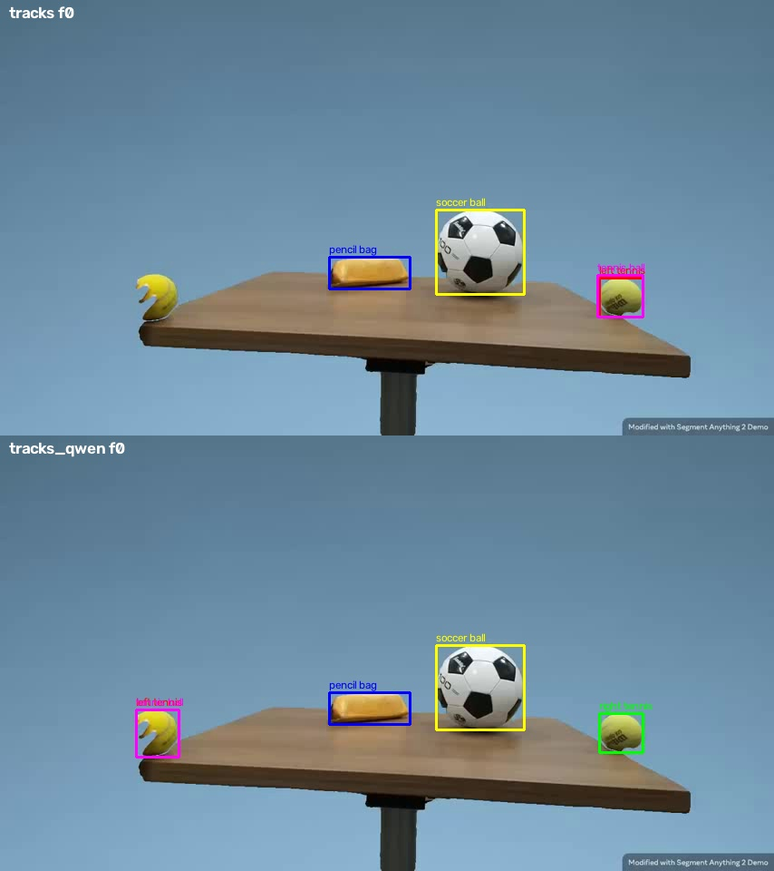
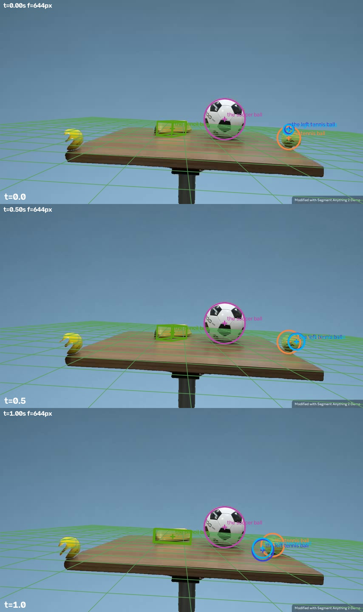
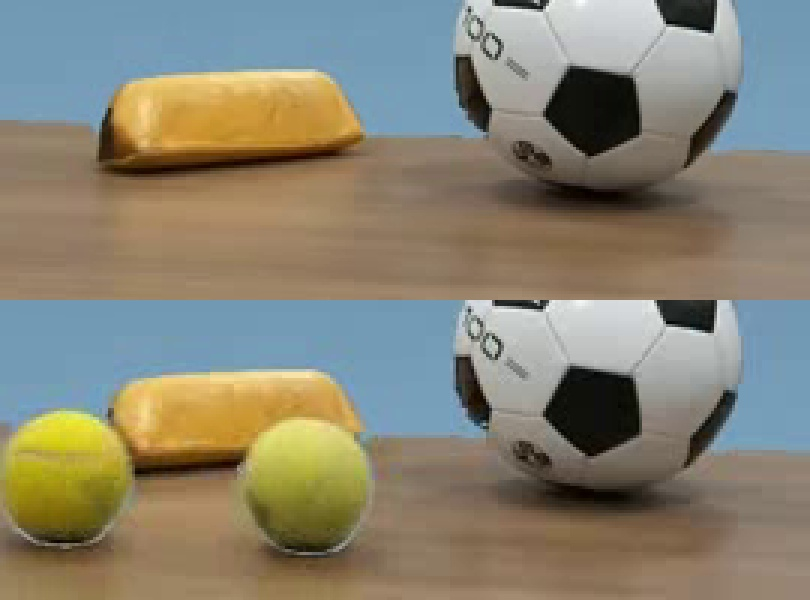

← 视频与问题 · 评估员逐视频报告（由 outputs/eval/*.md 生成）
captured_0034as 评估（结果文件 val_mh3_valcur11_s2dv8_v9b_routed.csv，3D 场景 c_v9b）
场景：遮罩变体（背景被抠掉），小桌面，相机大约在桌面上方 10 cm、低仰角。左右两颗网球原本静止：右球约 0.9 s 被手推出（f21–22），左球约 1.08 s 被推出（f26）。两球相向滚动，约 1.54 s（f37）迎面相撞后各自弹回。笔袋和足球全程静止。prior 只有"tennis ball 直径 6.7 cm"（类别级，不指具体哪一颗）。depth_info：t=1.2 s 时右球 0.776 m、左球 0.706 m；笔袋 1.05 m、足球 0.894 m 不带时刻。
叠加图（都在 scratchpad 里）：
- 跟踪对比，上半是 outputs/tracks，下半是 tracks_qwen：
captured_0034as/f00.jpg
、f24.jpg、f34.jpg、f48.jpg（同目录） - c_v9b 重建投影：
captured_0034as/ov_a.jpg
（t=0/0.5/1.0）、ov_b.jpg（t=1.2/1.3/1.5）、ov_c.jpg（t=1.9） - 笔袋放大：
captured_0034as/bag_zoom.jpg


题目表
| # | 题 | 答案 | 几何 (rctrack) | 场景拟合 (conf) | Qwen a/b/v9 | 最终 | MRA | 主因层 |
|---|---|---|---|---|---|---|---|---|
| q0 | 左球 1.2 s 速度 | 82.93 | 50.5 | 50.5 direct (0.6) | 61/48/60 | 50.5 fit | 0.6 | 跟踪（量的是右球）+ 真值存疑 |
| q1 | 右球 1.2 s 速度 | 99.47 | 103.0 | 103.0 direct (0.6) | 130/61/125 | 103.0 fit | 1.0 | 碰巧对：轨迹身份错 + 深度错；正确跟踪下各来源都给 54–60 |
| q2 | 笔袋高 | 6.7 | 6.29 | 4.97 (0.585) | 7.44/7.0/7.42 | 6.29 geo | 0.9 | 焦距（拟合 f=644 偏大） |
| q3 | 笔袋长 | 21.0 | 16.0 | 13.8 (0.7, agree_direct) | 18/18.5/18 | 13.8 fit | 0.6 | 焦距 + 朝向不可观测；路由在两者"一致"时取了较小的拟合值 |
| q4 | 足球直径 | 17.5 | 14.5 | 14.5 (0.7) | 22/22/22 | 14.5 fit | 0.8 | 焦距 |
| q5 | 左球 1.3 s 速度 | 84.54 | 48.7 | 48.7 direct (0.6) | 54/52.5/58.5 | 48.7 fit | 0.5 | 跟踪 + 真值存疑 |
| q6 | 右球 1.3 s 速度 | 92.33 | 115.5 | 115.5 direct (0.6) | 130/61/130 | 115.5 fit | 0.7 | 同 q1 |
| q7 | 左球总路程 | 57.1 | 29.2 (conf 0.3) | 63.5 (0.11) | 30/24/30 | 29.2 geo | 0.5 | 跟踪 + 语义（算成净位移）+ 真值存疑 |
| q8 | 右球总路程 | 70.62 | 29.8 (conf 0.3) | 60.2 (0.10) | 30/31/30 | 29.8 geo | 0.4 | 同 q7 |
几何值换成正确跟踪（tracks_v8p，即 valcur11 的 v8track 几何）后：左球速度 42.3 / 47.6，右球 53.7 / 55.3，笔袋 5.67 / 14.4，足球 13.1，总路程左 17.4、右 31.1。
根因结论
- 左右两颗球被认成同一颗（跟踪和名字查找，qp-tools，不在修复清单里）。 outputs/tracks（c_v9b、tracks_rc、tracks_v9*、tracks_m 都继承了这份）里，"the left tennis ball" 第 0 帧的框是 [661,306,709,349]，在帧宽 80% 的位置，实际是右球；缓存里根本没有右球的轨迹。
SceneTracks.get("the right tennis ball")返回的也是这条左球轨迹（已实测）：perceive._norm把 left/right/front/back 当修饰词删掉了。所以两颗球的全部 6 道题都在量右球，align_tq 里左右两题的 track_box 完全相同（t=1.2 s 都是 [528,301,581,347]）。看叠加图 ov_a/ov_b：真正的左球（画面左侧 x≈150–390）上没有任何重建。tracks_v8p 和 tracks_qwen 的左右是对的。 - 类别 prior 没有传给具体实例（场景拟合，qp-code-3d，新问题，和清单里 0041x 的"焦距投票"有关）。 清单把 "the tennis ball" 正确标成 role=class、track=false、reference_only，但 scene_fit 还是把它当成独立物体：拿它的轨迹做 stage A（这条轨迹 f32 起跳到足球框上，丢了 17 帧），还拟合成 airborne + ballistic。左右两颗实例球的直径没拿到 prior，dim_source=observed，D=0.055。depth_info 里的左右球锚点也绑不到 prior 物体上（calibrate 的提示是 "size-based depth for prior object 'the tennis ball'"），于是 focal_votes 只剩 lab_prior 650 一票。画面本身给出的 f 约 550–600（下面有计算），结果三道尺寸题都偏小 15–25%。
- 滚动物体的运动模型和自检失效（场景拟合，qp-code-3d，部分已在修）。 左右球都按 support 模式拟合，用的是整段一条匀加速曲线（t_on=0），既没用 0.833 s 的起动时刻，也没在碰撞反向处分段。为了贴合框，模型只好编出沿视线方向的大幅运动：Z 从 t=0 的 1.48 m 变到 1.2 s 的 0.70 m，rms 18–19 px（rms_rel 0.39–0.42），直径被压到 0.055。t=0 时投影出来的球只有约 24 px，悬在真球上方（ov_a 第一张），可 support_consistency 仍报 1.0。拟合的总路程 60–63 是这些假的径向运动累加出来的，接近真值纯属巧合。
真值存疑（中度，6 道运动题）：拿球自己当尺子（框高对应 6.7 cm），算出来的结果和焦距、depth_info 都无关：右球 1.2 s / 1.3 s 是 60 / 59 cm/s（真值 99 / 92），左球 66 / 53（真值 83 / 85），路径长度右 45、左 33 cm（真值 71 / 57）。真值大约是画面的 1.5–1.9 倍。1.0–1.4 s 之间框高恒定（45–47 px），说明没有径向运动。按 depth_info 加框宽推出的 f≈550 计算，右球整段的瞬时速度最高也只有 0.64 m/s，低于真值 0.92–0.99。这和 captured_0061（约 2 倍）、0027s（1.45 倍）的模式一致。修好 1–3 以后，本视频的运动题 MRA 会下降（右球 1.0/0.7 会降到约 0.5，总路程的拟合值 0.8 也会下降）。不能因为这个就否掉修复。尺寸题会上升（f≈560 时笔袋高约 6.4、足球约 16.7）。
逐条问题（按影响面排序）
1. 带方位修饰词的同类实例身份合并（跟踪 / 名字查找）—— qp-tools
- 现象：见根因 1。证据：outputs/tracks/captured_0034as.json 的 tracks 键只有 left / pencil / soccer / "the tennis ball"，left 在 f0 位于 x=661–709。用这份缓存调
SceneTracks.get('the right tennis ball')，返回的是 'the left tennis ball'。scenegraph_pfc 里左右球的 events 也完全一样（onset 0.833，turns [0.833, 1.583, 1.958]），实际右球 0.9 s 起动、左球 1.08 s 起动。测试集 tracks_test/captured_0034ax 里 "the left tennis ball" 同样在帧宽 80% 处（实为右球），tracks_v8p_test 是对的。 - 根因层：perceive（
SceneTracks.get的_norm删掉 left/right/front/back；候选选择没有核对 location_hint "left"；merge 允许两个名字共用同一条轨迹）。 - 同一缺陷的影响面：验证集 captured_0034as（6 题）、internet_0019（person on the left/right）。测试集有 18 个视频存在只差修饰词的成对名字：captured_0034 全家（a/as/ax/b/bs/bx，共 6×9 题）、captured_0018/s/x（left/right person）、internet_0019(+seg)、internet_0036（top/bottom hand）、internet_0050（basketball stand）、internet_0059（billboard）、simulation_0052/0056（"the right streetlight" 和 "the streetlight"）。测试集共有 131 题、65 个视频的问句里带方位修饰词。
- 通用修改建议： (a)
get()模糊匹配时，方位修饰词（left/right/front/back/top/bottom/upper/lower/first/second、"on the left" 等）要参与区分。查询词和候选的修饰词冲突时直接不匹配；查询带修饰词、候选不带（类别名）时，只有不存在带修饰词的兄弟名字才允许匹配。 (b) 候选选择对 location_hint 做一致性检查：同类候选在首个共同可见帧里按 x（或 y）排序，"left" 必须是最左的那个，不满足就换候选或重新提示。 (c) merge / recheck 增加身份冲突检查：两个不同名字的框在 >50% 帧里 IoU>0.8，就标 identity_conflict，对应题目的几何 / 拟合 conf ≤0.3，不作提示。 验收：val captured_0034as 左球 f0 中心 x≈170、右球 x≈685；两条轨迹全程 IoU<0.3；scenegraph 左右球的 onset 不同（约 1.08 / 0.9 s）；测试集 0034 全家和 0018 全家在叠加图上逐一核对。 - 附带一个小问题：tracks_qwen 和 tracks_qwen_test 里有名为 "what is the total distance traveled by the left tennis ball" 的轨迹，说明问句全文被当成物体名送去跟踪了（右球那条还跟到了足球上）。需要查清是哪一步把解析失败的问句当成了物体名。
2. role=class 的 prior 没有展开到实例，类别节点仍被跟踪和拟合 —— qp-code-3d（清单里已经有 class 信息，问题在 scene_fit / calibrate 怎么用它）
- 现象：c_v9b 的 json 里 stage_a = "the tennis ball"，objects 里有它（mode=ballistic，airborne，source=rule）。左右实例 dim_source.D = "observed"，D≈0.055。f_source = lab_prior，focal_votes = [lab_prior 650]。几何 calibrate 的提示是 "size-based depth for prior object 'the tennis ball'"，depth_info 锚点没有给到 prior 物体。
- 画面给出的 f：左球框高 52 px × 0.706 / 0.067 ≈ 548；右球框高 46–53 px × 0.776 / 0.067 ≈ 533–614；足球框宽 97 px，以拟合中心 Z=0.965（depth_info 0.894 加半径，说明 depth_info 很可能是到物体表面的距离）算，97 × 0.965 / 0.175 ≈ 535。几种独立估计都落在 530–615，lab 先验 650 偏大约 15%。f=644 时笔袋高 4.97、长 13.8、足球 14.5，全部偏小。
- 根因层：拟合 / 尺度（prior 绑定）。
- 同一缺陷的影响面：凡是 prior 写成类别名、题目问的是带修饰词或编号的实例，都会受影响：测试集 captured_0034 全家（prior 是 tennis ball）、0018 全家（检查 prior 是否写成 "the person"）、simulation_0052/0056（streetlight）、两匹马的 simulation_0248/0249。还有清单里所有 role=class 的物体（比如 internet_0004 的 ruler 也是 class / reference_only，需要确认没被拟合成物体）。
- 通用修改建议：读到清单 role=class（或 reference_only 且 track=false）的节点时，不跟踪、不拟合、不进 stage A。它的 prior 维度复制给所有 head noun 相同的实例（object_key 去掉修饰词后相等），dim_source 记为 "prior(class)"。stage A 选一个带时刻 depth 锚点的实例；焦距投票加一票"实例框尺寸 × 时刻锚点"（在锚点时刻取框的直径，按到表面距离加半径修正）。 验收：本视频左右球 D=0.067、dim_source 为 prior；focal_votes 里有一票落在 530–620；t=1.2 s 的 Z 与 depth_info 相差 <10%；三道尺寸题的拟合值变大（不拿真值验收，只检查方向和 f 的来源）。与清单 0041x"焦距投票不再只靠 lab 先验"合并实施，这里是那条在本视频不生效的具体原因。
3. support 模式的滚动物体用整段单一运动模型，自检没发现悬浮和尺寸不一致 —— qp-code-3d（部分已在修：0061"停住后允许第二段运动"、0041x"静止阶段按支撑面约束"）
- 现象：左右球 t_on=0，p0 的 Z=1.48 / 1.39 m，v0z≈-1.5 m/s，az≈+1.4 m/s²，rms 18.4 / 19.5 px。t=0 的投影直径约 24 px，真实框是 48 px，而且悬在框上方（ov_a）。可 support_consistency=1.0、vis_agree=1.0，只有 align_tq 在 t=1.0 s 时 IoU=0.34。fit-displacement 63 / 60 被假的径向运动放大了（同一段画面路径用球作尺子只有 33 / 45 cm）。
- 根因层：拟合（运动分段和支撑约束）+ 自检。
- 同一缺陷的影响面：所有"桌面 / 地面上被推动或滚动、中途碰撞反向"的物体：测试集 captured_0034 全家，以及 0041x、0061 的地面滚动段、0021x。
- 通用修改建议： (a) support 模式的物体按"静止 → 滚动段 → 反向 / 接触事件 → 滚动段"分段。起动时刻由轨迹位移判定（场景图只作初值），反向时刻由像面速度变号判定，每段各自匀减速。球心高度固定为 R，位置限制在平面上，深度只由平面几何决定，不让它自由出现径向运动。 (b) quality 增加"投影直径与框尺寸之比"（每帧取中位数）和"接地点与框底的偏差"。比值偏离 1 超过 20% 或接地偏差 >0.3 倍框高时，support_consistency 降低、conf 降低。 验收：本视频左右球 rms <5 px；投影直径与框之比在 0.9–1.1；拟合路径与跟踪路径（按同一 f）相差 <10%；静止段速度为 0。
- 附：场景图把左右球和足球标成 contact（1.146–1.583 s，依据只是 "boxes adjacent"），这是画面重叠误判，已在清单里（"contact 要排除纯画面重叠"）。真实发生的是两颗网球在约 1.54 s 互相碰撞，场景图漏掉了，修第 1 条以后再看。
4. "total distance traveled" 被算成净位移 —— qp-tools（parse / solve / physics）
- 现象：parse 得到 quantity=displacement，
physics.displacement_px取首尾两帧连线。两颗球碰撞后都反向：左球路径 260 px，净位移只有约 160 px；右球路径 303 px，净位移约 241 px。用正确跟踪时，几何的左球值只有 17.4（路径应在 30 以上）。拟合侧的 fit-displacement 算的是路径，但轨迹本身是错的。 - 根因层：解析 / 量的语义。
- 同一缺陷的影响面：验证集只有这 2 题（真值本身存疑，没法用来验收）；测试集有 31 题、22 个视频带 "total distance / distance travelled"。轨迹不反向时路径约等于净位移，所以改动只影响往返、弹跳类轨迹。
- 通用修改建议：问句含 "total distance (traveled/travelled/covered)" 时用新量 path_length：在运动段内（起动到停止）对平滑后的中心轨迹（2D 用像面加 m/px，3D 用拟合轨迹）累加段长，低于噪声底（例如 <0.5 px/帧）的抖动不计。"displacement" 和不带 total 的 "distance from A to B" 保持净位移不变。"average speed" 的约定（数据集用净位移）不动。 验收：轨迹不反向的题，新旧值相差 <3%；本视频用正确跟踪时，路径值大于净位移。
- 负责：parse 和量的定义归 qp-tools；3D 拟合侧的 path 计算归 qp-code-3d。
5. 身份可疑的轨迹仍拿到 direct conf 0.6–1.0（路由 / conf）—— qp-tools（run.answer_conf）+ qp-code-3d（directkin）
- 现象：同一条轨迹，对右球给出 103 / 116，对左球给出 50 / 49（深度绑定不同，而且右球用的是 size-based 深度），answer_conf 却都是 1.0，directkin 后 conf=0.6，S3 路由直接采用。几何的总路程题已经正确标了 depth-unanchored（conf 0.3）。
- 建议：落实第 1 条 (c) 的 identity_conflict 以后，answer_conf 读这个标记，conf ≤0.3。directkin 只在实例的 depth 锚点和轨迹身份都可靠时才覆盖拟合值。
- 影响面同第 1 条。
6. 拟合值与 direct 值"一致"时取拟合值，系统性取到偏小的那个（路由，次要）—— qp-code-3d
- 现象：笔袋长，拟合 13.8（f=644）对 direct 16.0（calibrate 的 f 约 584），相差 14%，被判为 agree_direct，conf 抬到 0.7，最终取了 13.8。两者的差异几乎全部来自 f 的来源不同，所以并不是两次独立测量。
- 建议：判定"一致"时，同时检查两边的 f 来源。f 来源不同且差 >8% 时不加信度，或者改报 f 投票更可靠的那一侧。修好第 2 条以后，这条大概率自然消失，先观察。
不是问题 / 已排除
- 解析：9 题的量、物体、时刻都正确。
- 物体清单：5 个节点，class 的标注正确。问题出在下游怎么使用这些标注（第 2 条）。
- 支撑面：main_support=table，plane 倾角 [3.4°, 1.7°]，相机在桌面上方约 9.5 cm。用足球的接地点核对（底边 y=324，中心 Z≈0.965）推出相机高约 0.11–0.13 m，与平面一致；叠加图上的网格也和桌面吻合。
- 笔袋高度没有被截断（bag_zoom.jpg：框 y 283–318 包住了整个袋子，后段帧球只遮住了底沿，框没有变）。高度偏小是 f 的问题。笔袋长度在 f≈560 时约 16.6，仍比真值短；袋子左端面可见，说明有一定偏航，低视角下长轴朝向不可观测。这一残差不建议追。
- 可见性：所有物体全程在画面内，vis_agree=1.0，没有问题。